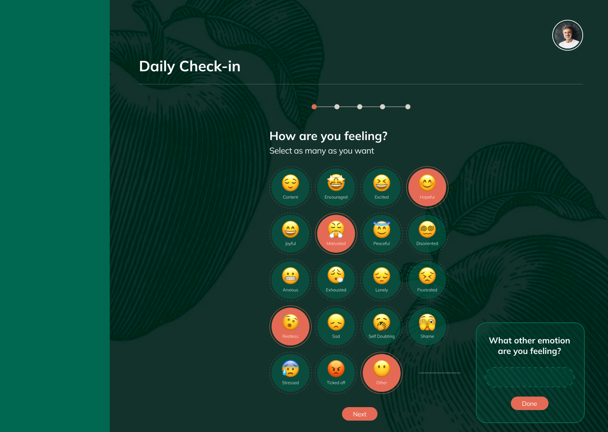
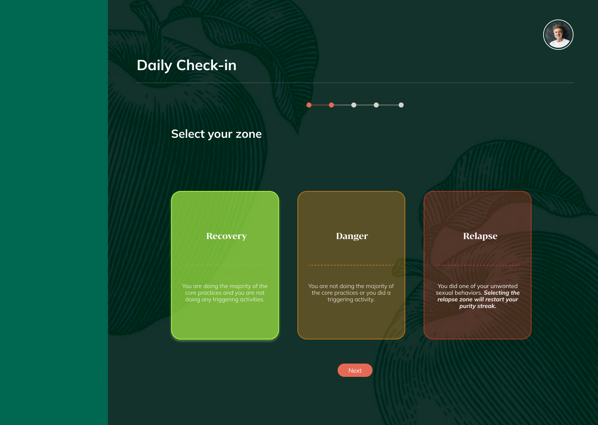
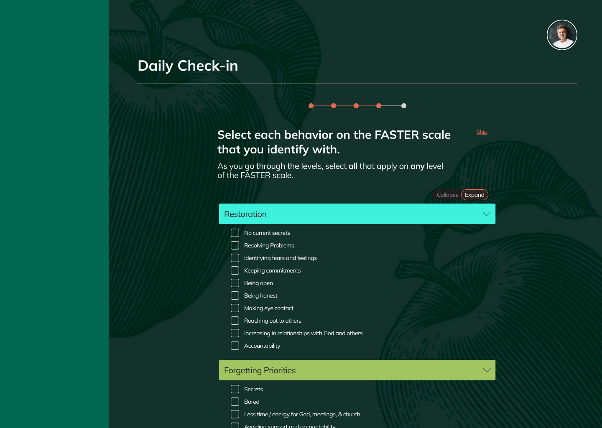
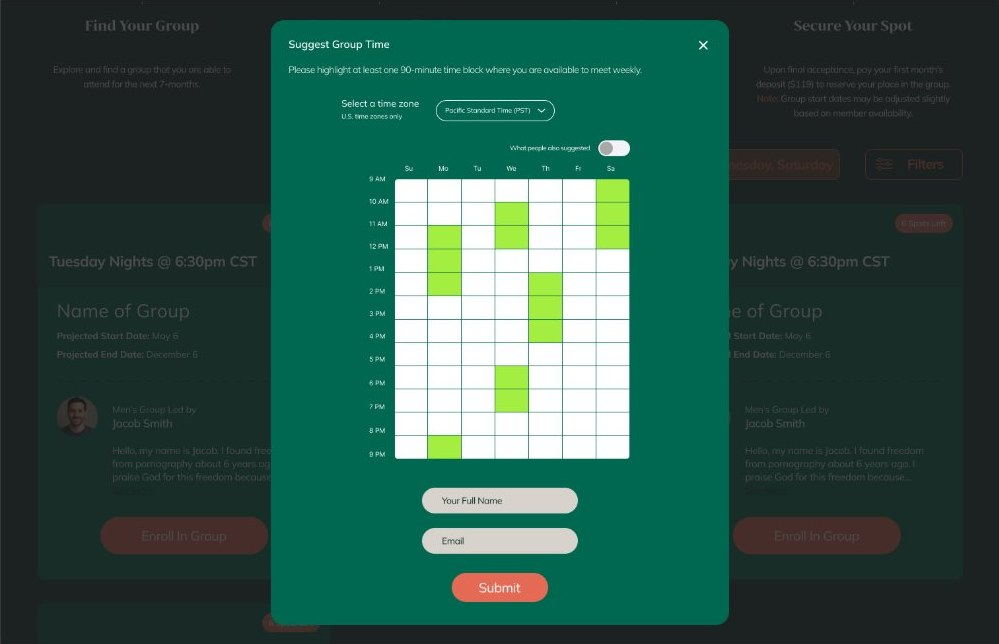
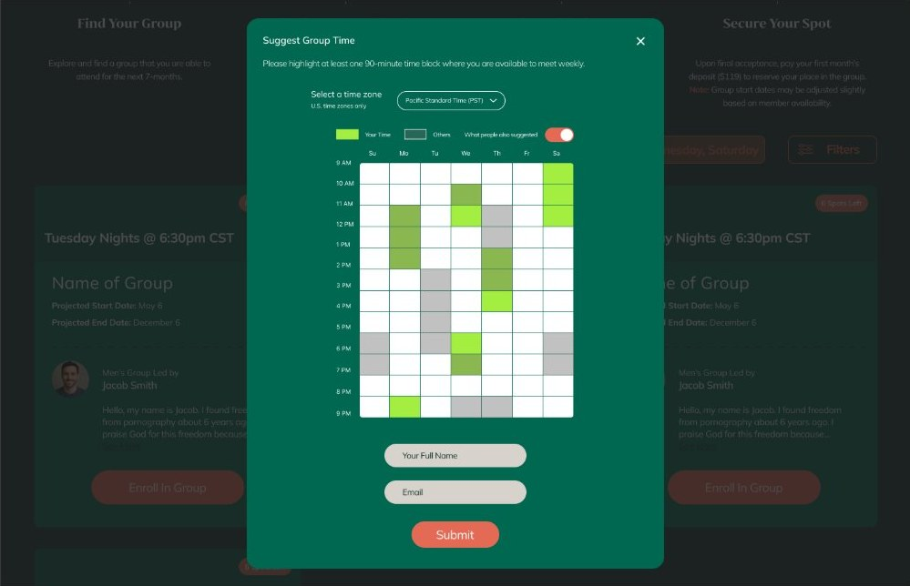
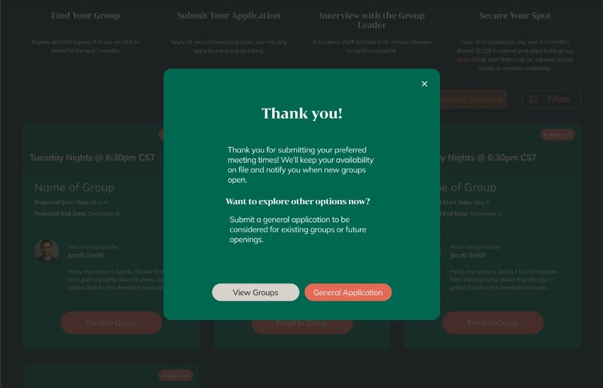
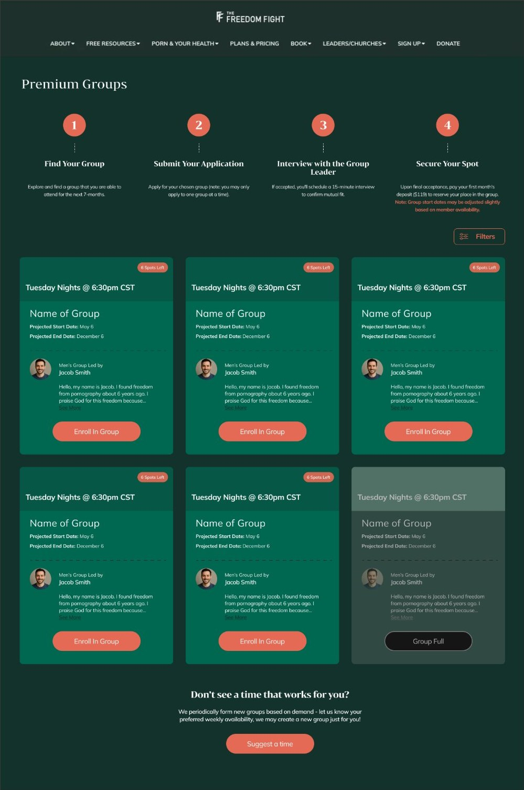
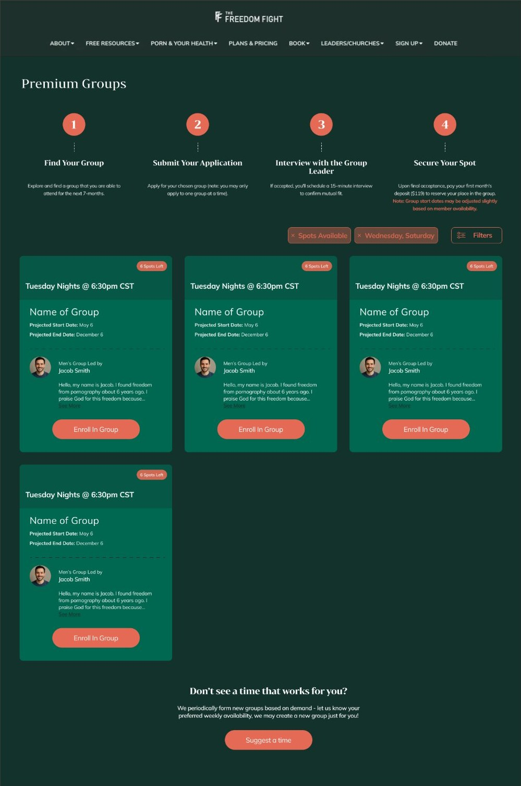
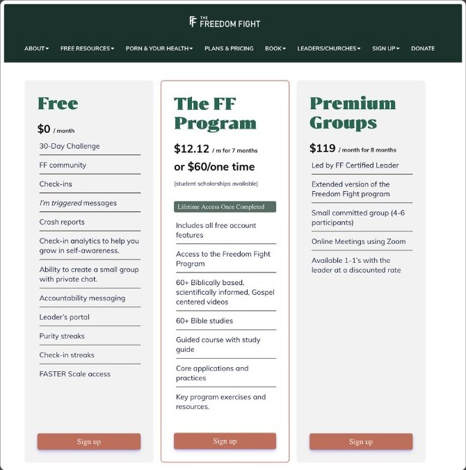
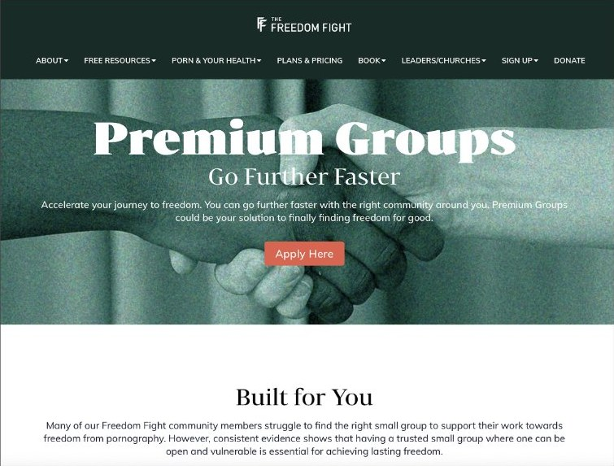

Case study · Freedom Fight
Mobile flows, rebuilt for a connected desktop experience.
Freedom Fight is an educational program built around courses and a supportive community. I translated its mobile designs into a scalable desktop dashboard, and designed the Premium Groups pages where members find and enroll in a small group.

Two pieces of one program.
Freedom Fight pairs educational courses with community and accountability tools. Working alongside my team, I contributed in two ways: I took mobile designs and made them work as a scalable desktop dashboard, and I owned the Premium Groups pages, from mapping the user flow to designing the screens.
From a phone screen to a desktop dashboard.
The challenge
A phone shows one thing at a time. A desktop shows everything at once, so simply stretching the mobile screens would have left members with a wall of equally loud content. My job was to decide what needs to be seen first.
What I prioritized on the home dashboard
- The daily habit comes first. Check-ins and the current streak sit at the top left, with the day's tasks one click away.
- Community stays in view. New messages sit beside the check-in card so a member sees who is reaching out without leaving the page.
- Progress is always visible. "Your Path" shows where the member is in the 30 Day Challenge and what unlocks next.

-
1
Navigation grows with the screen
On desktop the mobile tab bar becomes a persistent sidebar: Home, Messages and Courses, then Community and Tools.
-
2
Streaks next to the daily action
Purity and check-in streaks sit above a single Check-In button.
-
3
Progress with a clear next step
Course progress has one Continue button, so members pick up where they left off.
One screen per question, brought over from mobile as a step-by-step flow.







Suggest a time.
A short flow that turns "no group works for me" into information the program can act on, and ends with a next step instead of a dead end.






Before and after.
Drag the handle to compare the full list with a filtered one.


Default FilteredWhere it lives on the site.




What came of it.
Results. The desktop dashboard and Premium Groups pages were designed over four weeks and implemented by the team.
My part. I translated the mobile designs into the desktop dashboard, focusing on hierarchy and what users see first, and mapped and designed the Premium Groups enrollment flow.
Learned. Moving from mobile to desktop isn't about filling the extra space. It's about deciding what the user needs to see first. Mapping the whole flow, including full groups and times that don't fit, showed me how much of good UX is planning for the moments when things don't go perfectly.